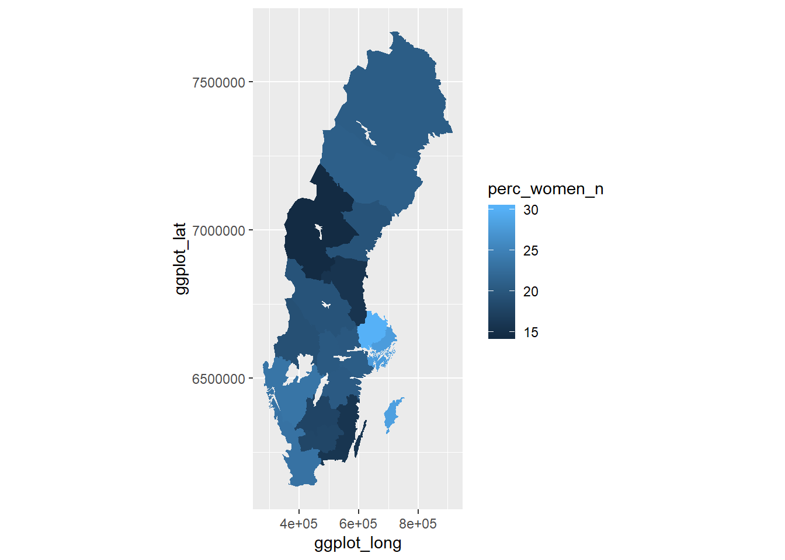
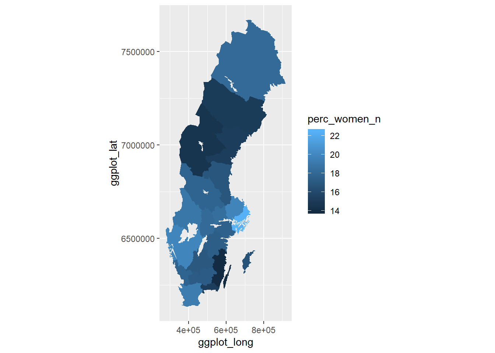
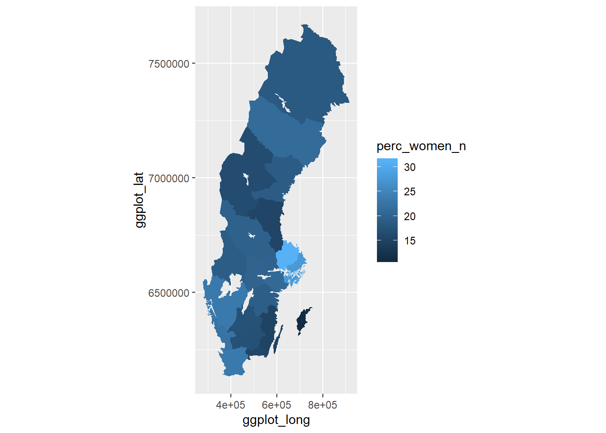

Chapter 6 Percent women in the countys
Employees 16-64 years by region of work, occupation (3-digit SSYK 2012) and sex. Year 2014 - 2017
214 Engineering professionals
Year 2017
options(tibble.print_max = Inf)
readfile ("000000NL_3.csv") %>%
group_by (`region`, year) %>%
summarise (perc_women = perc_women (salary)) %>%
arrange (desc (perc_women)) %>%
knitr::kable(
booktabs = TRUE,
caption = 'Percent women in the countys, 214 Engineering professionals') | region | year | perc_women |
|---|---|---|
| 03 Uppsala county | 2017 | 30.2% |
| 09 Gotland county | 2017 | 28.4% |
| 01 Stockholm county | 2017 | 28.0% |
| 14 Västra Götaland county | 2017 | 23.6% |
| 12 Skåne county | 2017 | 23.3% |
| 13 Halland county | 2017 | 23.3% |
| 24 Västerbotten county | 2017 | 21.0% |
| 04 Södermanland county | 2017 | 20.8% |
| 25 Norrbotten county | 2017 | 20.8% |
| 05 Östergötland county | 2017 | 20.5% |
| 18 Örebro county | 2017 | 20.3% |
| 19 Västmanland county | 2017 | 20.2% |
| 20 Dalarna county | 2017 | 19.6% |
| 22 Västernorrland county | 2017 | 19.6% |
| 17 Värmland county | 2017 | 19.2% |
| 07 Kronoberg county | 2017 | 18.0% |
| 06 Jönköping county | 2017 | 17.8% |
| 10 Blekinge county | 2017 | 15.9% |
| 08 Kalmar county | 2017 | 15.8% |
| 21 Gävleborg county | 2017 | 15.7% |
| 23 Jämtland county | 2017 | 14.5% |
| 99 County unknown | 2017 | 11.1% |
readfile ("000000NL_3.csv") %>%
group_by (`region`, year) %>%
summarise (perc_women = perc_women (salary)) %>%
mutate(perc_women_n = as.numeric(sub("%", "", perc_women))) %>%
mutate(lnkod_n = as.numeric(substr(region, 1,2))) %>%
right_join(map_ln_n, by = "lnkod_n") %>%
ggplot() +
geom_polygon(mapping = aes(x = ggplot_long, y = ggplot_lat, group = lnkod, fill = perc_women_n)) +
coord_equal()

Figure 6.1: Percent women in the countys, 214 Engineering professionals
Employees 16-64 years by region of work, occupation (3-digit SSYK 2012) and sex. Year 2014 - 2017 311 Physical and engineering science technicians Year 2017
options(tibble.print_max = Inf)
readfile ("000000NL_4.csv") %>%
group_by (`region`, year) %>%
summarise (perc_women = perc_women (salary)) %>%
arrange (desc (perc_women)) %>%
knitr::kable(
booktabs = TRUE,
caption = 'Percent women in the countys, 311 Physical and engineering science technicians') | region | year | perc_women |
|---|---|---|
| 99 County unknown | 2017 | 3.23% |
| 01 Stockholm county | 2017 | 22.5% |
| 14 Västra Götaland county | 2017 | 19.9% |
| 03 Uppsala county | 2017 | 19.8% |
| 12 Skåne county | 2017 | 19.3% |
| 17 Värmland county | 2017 | 19.0% |
| 19 Västmanland county | 2017 | 18.5% |
| 18 Örebro county | 2017 | 18.2% |
| 25 Norrbotten county | 2017 | 18.2% |
| 13 Halland county | 2017 | 17.8% |
| 20 Dalarna county | 2017 | 17.8% |
| 04 Södermanland county | 2017 | 17.6% |
| 05 Östergötland county | 2017 | 17.4% |
| 07 Kronoberg county | 2017 | 17.3% |
| 06 Jönköping county | 2017 | 17.0% |
| 21 Gävleborg county | 2017 | 16.9% |
| 09 Gotland county | 2017 | 16.7% |
| 10 Blekinge county | 2017 | 15.2% |
| 22 Västernorrland county | 2017 | 15.2% |
| 24 Västerbotten county | 2017 | 15.1% |
| 23 Jämtland county | 2017 | 14.6% |
| 08 Kalmar county | 2017 | 13.9% |
readfile ("000000NL_4.csv") %>%
group_by (`region`, year) %>%
summarise (perc_women = perc_women (salary)) %>%
mutate(perc_women_n = as.numeric(sub("%", "", perc_women))) %>%
mutate(lnkod_n = as.numeric(substr(region, 1,2))) %>%
right_join(map_ln_n, by = "lnkod_n") %>%
ggplot() +
geom_polygon(mapping = aes(x = ggplot_long, y = ggplot_lat, group = lnkod, fill = perc_women_n)) +
coord_equal()

Figure 6.2: Percent women in the countys, 311 Physical and engineering science technicians
Percent women in the countys
214 Engineering professionals
Joint-stock corporations not controlled by the government sector
readfile ("000000RM.csv") %>%
group_by (`region`, year) %>%
summarise (perc_women = perc_women (salary)) %>%
arrange (desc (perc_women)) %>%
knitr::kable(
booktabs = TRUE,
caption = 'Percent women in the countys, 214 Engineering professionals, Joint-stock corporations not controlled by the government sector')| region | year | perc_women |
|---|---|---|
| 03 Uppsala county | 2017 | 31.2% |
| 01 Stockholm county | 2017 | 27.9% |
| 14 Västra Götaland county | 2017 | 23.4% |
| 12 Skåne county | 2017 | 23.3% |
| 13 Halland county | 2017 | 22.4% |
| 24 Västerbotten county | 2017 | 21.3% |
| 04 Södermanland county | 2017 | 21.0% |
| 18 Örebro county | 2017 | 20.2% |
| 19 Västmanland county | 2017 | 20.0% |
| 20 Dalarna county | 2017 | 19.8% |
| 05 Östergötland county | 2017 | 19.3% |
| 17 Värmland county | 2017 | 19.2% |
| 22 Västernorrland county | 2017 | 19.0% |
| 25 Norrbotten county | 2017 | 18.6% |
| 06 Jönköping county | 2017 | 17.4% |
| 07 Kronoberg county | 2017 | 17.3% |
| 23 Jämtland county | 2017 | 16.6% |
| 10 Blekinge county | 2017 | 15.6% |
| 21 Gävleborg county | 2017 | 15.5% |
| 08 Kalmar county | 2017 | 15.1% |
| 99 County unknown | 2017 | 14.3% |
| 09 Gotland county | 2017 | 11.1% |
readfile ("000000RM.csv") %>%
group_by (`region`, year) %>%
summarise (perc_women = perc_women (salary)) %>%
mutate(perc_women_n = as.numeric(sub("%", "", perc_women))) %>%
mutate(lnkod_n = as.numeric(substr(region, 1,2))) %>%
right_join(map_ln_n, by = "lnkod_n") %>%
ggplot() +
geom_polygon(mapping = aes(x = ggplot_long, y = ggplot_lat, group = lnkod, fill = perc_women_n)) +
coord_equal()

Figure 6.3: Percent women in the countys, 214 Engineering professionals, Joint-stock corporations not controlled by the government sector